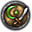
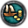
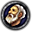
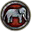
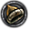
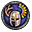

|  |
Sword of Islam |
Made it possible to play as a Muslim character |
9,99 Euros |
|
Legacy of Rome |
Added events, factions, and standing professional armies. More flavour to the Byzantine Empire
|
4,99 Euros |
|
Sunset Invasion |
An alternative history course was added, where the Aztecs had mastered the seas, and came to
Europe, to colonize it |
4,99 Euros |
|  |
The Republic |
Made it possible to play as the Merchant Republics leaders, such as the Doge of Venice |
9,99 Euros |
|
The Olds Gods |
Made it possible to play as rulers who follow pagan religions, such as the Norse Vikings, etc.
|
14,99 Euros |
|  |
Sons of Abraham |
Added some flavour to the Jewish religion, and the system of the Catholic Papacy |
9,99 Euros |
|  |
Rajas of India |
Many events were added to the regions of India, and the Continent of Asia was worked on to be
more detailed |
14,99 Euros |
|
Charlemagne |
Many new cultures were added, and now the player was able to create fantasy kingdoms |
14,99 Euros |
|
Way of Life |
Reworked the system of educating your heir, and to set yourself on different tasks regarding
your rulership |
7,99 Euros |
|  |
Horse Lords |
A new government type was introduced for the steppe cultures, the nomadic realm |
14,99 Euros |
|
Conclave |
Changes to diplomacy, and made the Royal Council more powerful, by granting them the power of
deciding laws with their ruler |
14,99 Euros |
 |
The Reapers Due
|
The concept of plagues ravaging the landscape was introduced, alongside with the medieval
healthcare system, or the lack of it |
9,99 Euros |
|
Monks and Mystics
|
Special relics were added to the game and the ability to join different societies, such as
religious orders, Hermetics, assassins, and devil worshipers |
14,99 Euros |
|
Jade Dragon |
Added a special Chinese government which could be a threat to you, but also can be a powerful
ally |
19,99 Euros |
|  |
Holy Fury |
The Bloodline mechanic was added to the game, giving some dynasties some extra flavour. Also,
the pagan religions gained powerful alternatives, giving them reasons not to convert to
Christianity or Islam |
19,99 Euros |